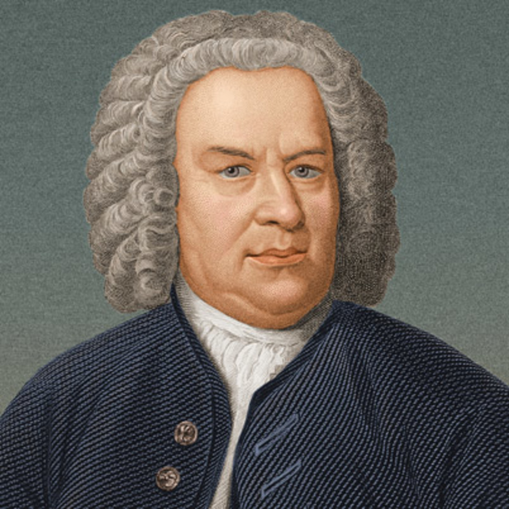
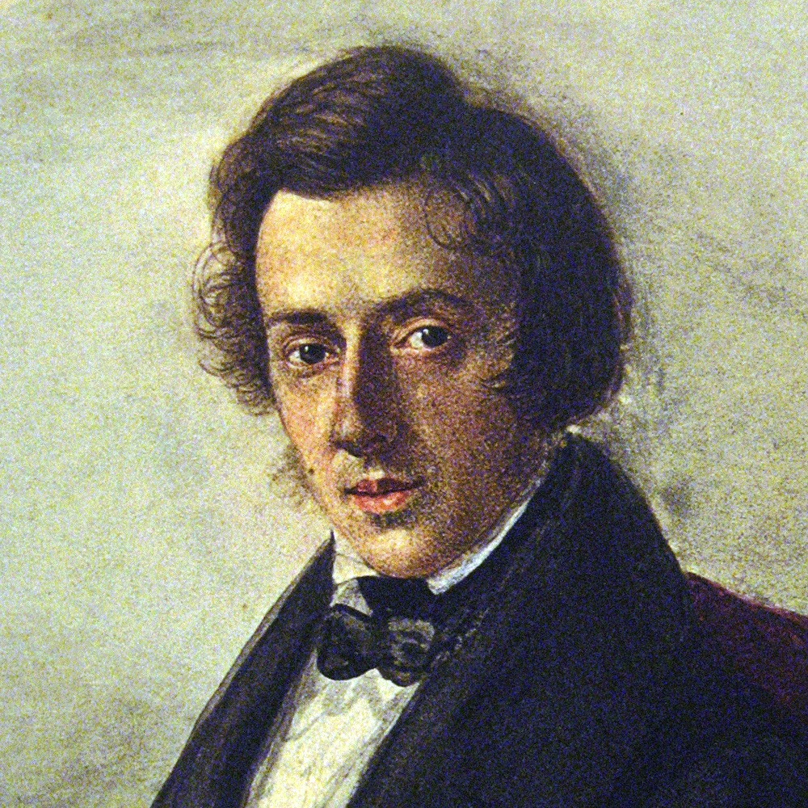
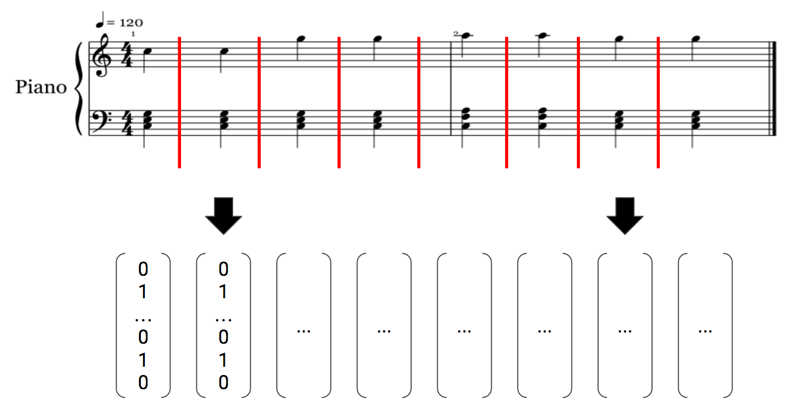

CSCI 4152/6509 P-15
Musical Authorship Attribution using Recurrent Neural Networks
Mark Thomas
Dalhousie University
Dept. of Computer Science
Authorship Attribution
- What is authorship attribution?
Provided a corpus of documents labelled by their authors, we want to recognize unlabelled documents
- Why would I care to do that?
Applications include: mining demographics [1], uncovering author pseudonyms [2], and investigating plagarism [3].
- How would I do that?
N-gram models, naïve Bayes classifiers, vector space models, ... many more [4]
Musical Authorship Attribution
Provided a corpus of labelled music, can we identify the composer of an unlabelled piece.
Johann Sebastian Bach

image source: biography.com
midi source: piano-midi.de
Frédéric Chopin

image source: wrti.org
midi source: piano-midi.de
Dataset
- Corpus of classical music from famous composers
- MIDI data representations... Amir!
- Sampled sequences
- Training, validation, and test split
image sources: biography.com, wikipedia.org & wrti.org
There is just one problem...
I don't really know that much about music 😅
Methodology
Using the sequential representations Amir discussed in his presentation,

source: yoavz.com
can we treat this as a classification problem and use a RNN?
Network Architecture
- A "many-to-one" architecture
- 2-layer bi-directional recurrent neural network
- Long short-term memory (LSTM) hidden units

Results
source: wikipedia.org
The model is still being trained and results are still being collected...
source: mateuszbuda.github.io